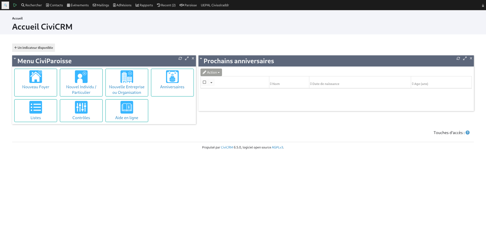
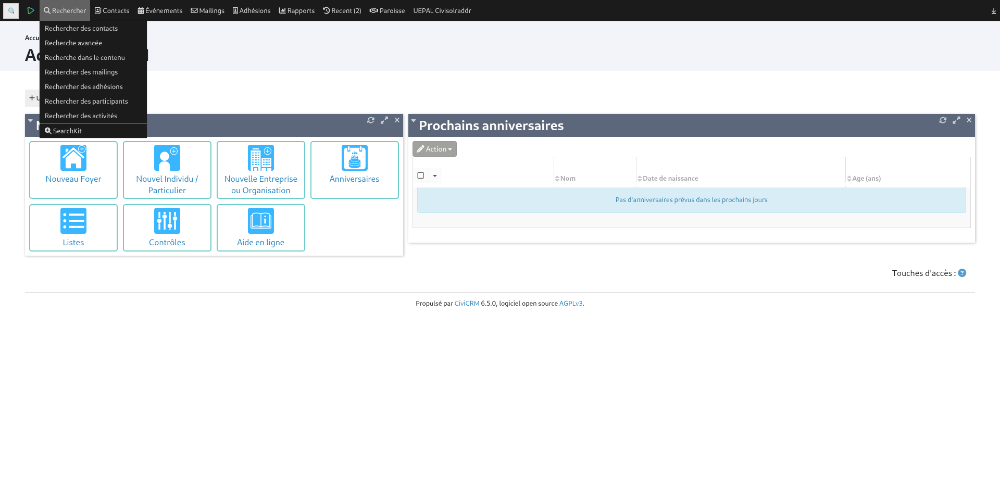
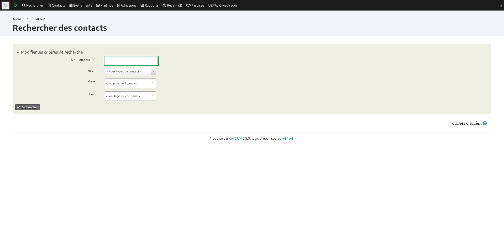
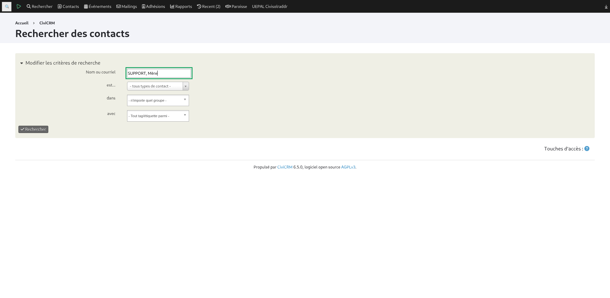
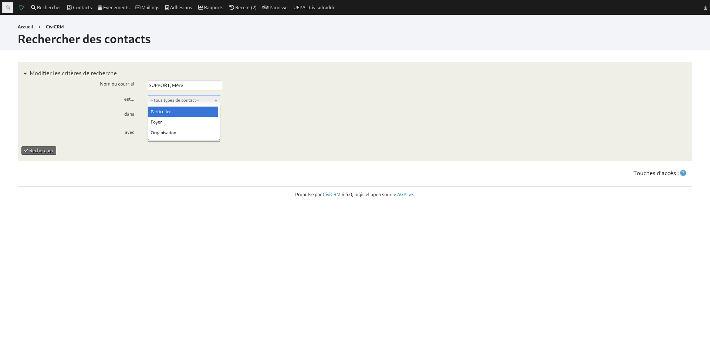
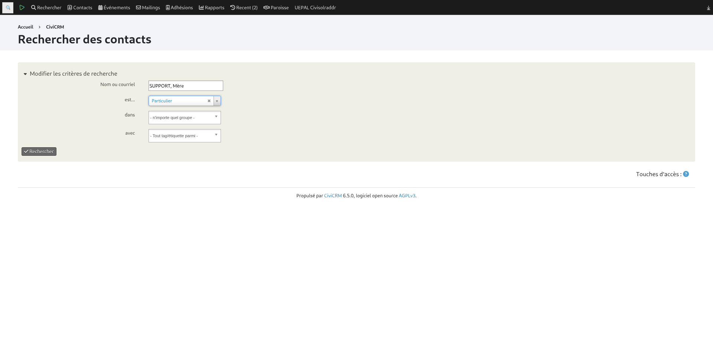
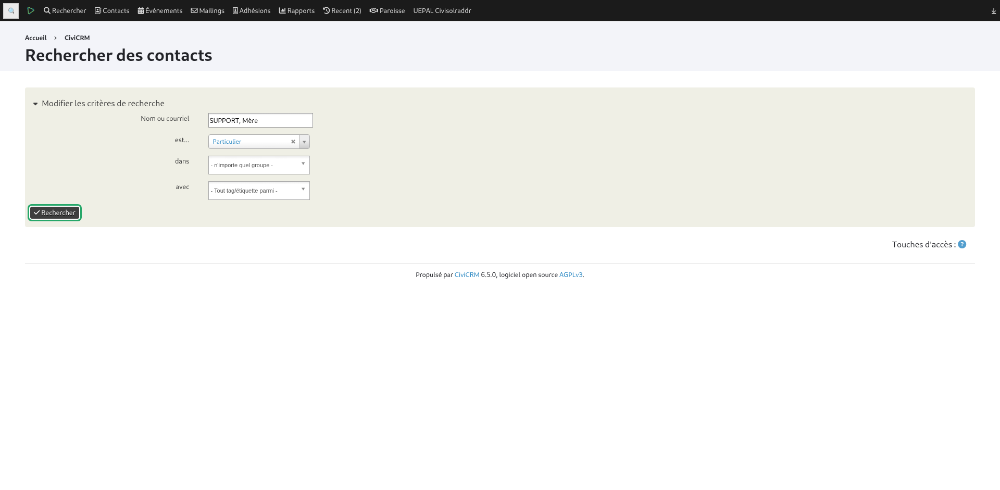
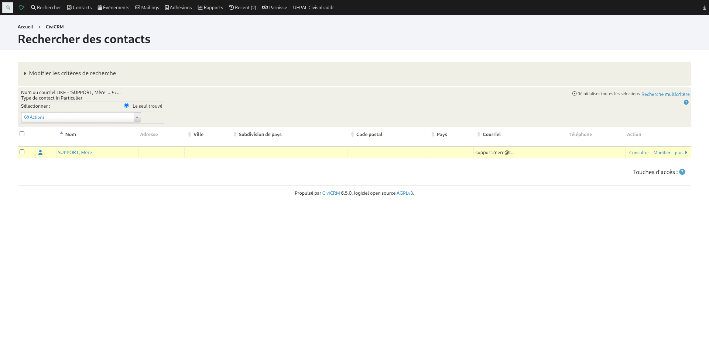

- Mon objectif : rechercher la fiche d’un Individu.

- Je me rends sur la page d’accueil

- Je déroule le menu "Rechercher" en haut à gauche

- Je sélectionne \“Rechercher des contacts\”

- Je renseigne le nom du contact que je recherche dans le champ “Nom”

- Je déroule la liste du type de contact

- Je sélectionne "Particulier"

- Je clique sur RECHERCHER

- Je constate qu’un résultat apparaît dans la liste. Le nom est cliquable pour accéder à la fiche.
- FIN du diaporama